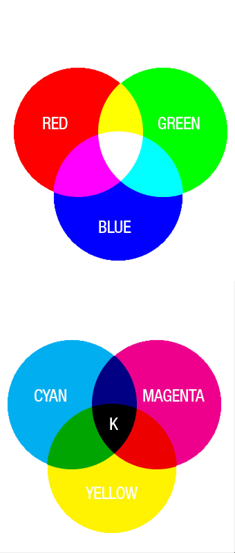
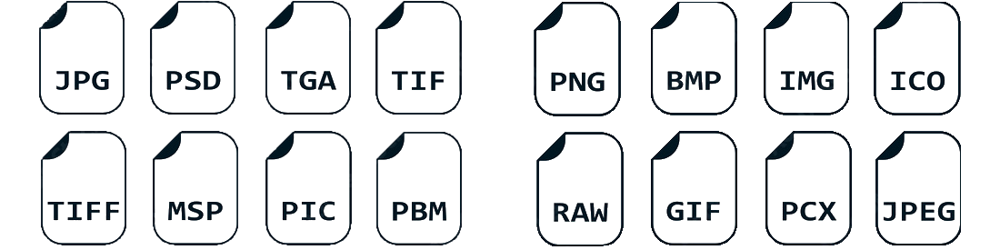
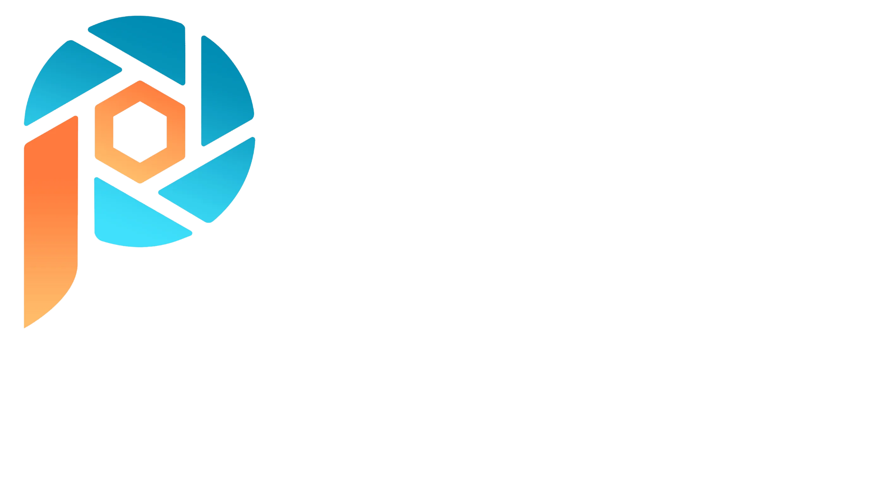
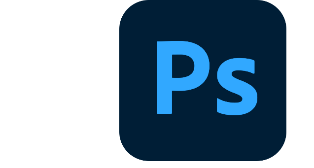
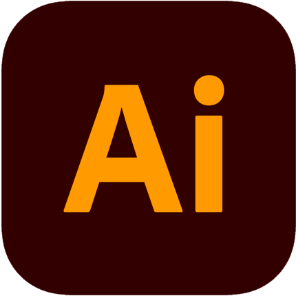
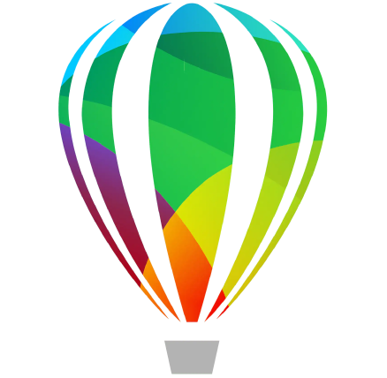
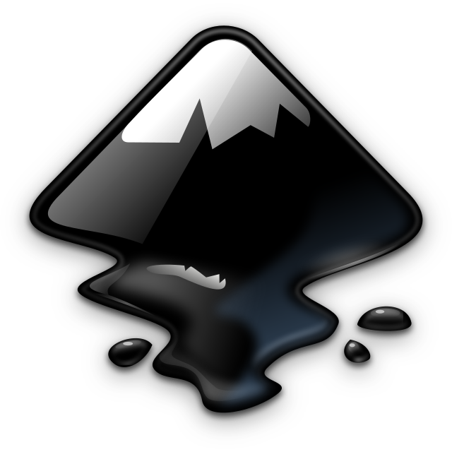

Cyfrowy zapis obrazu
Obrazy widoczne na naszym komputerze tak jak inne dane są zapisywane jako kod binarny, czyli za pomocą zer i jedynek. Obrazy cyfrowe to obrazy otrzymane np. poprzez przetworniki analogowo-cyfrowe znajdujące się w urządzeniach takich jak skanery , aparaty cyfrowe lub kamery, lub tworzony, bądź edytowany przez programy komputerowe z pomocą urządzeń peryferyjnych (myszka, tablet graficzny itp.) ,a także każde przechowywane na nośniku komputerowym. Należy zwrócić uwagę, że wizualizacja obrazu cyfrowego (np. jego wydruk lub wyświetlenie na ekranie) nie jest już obrazem cyfrowym, a analogowym. Do zapisania obrazu na nośniku wykorzystuje się różne formaty plików graficznych. Często stosuje się kompresję danych, aby oszczędzić miejsca na nośniku.
Palety barw
W informatyce paleta barw jest terminem związanym z matematycznymi możliwościami zawarcia informacji o kolorze w oprogramowaniu komputerowym. W początkowym okresie rozwoju możliwości graficznych komputerów było to zaledwie 2, 4, 8, 16 lub 256 kolorów. Później stopniowo zwiększano możliwości sprzętu, aż do osiągnięcia wartości ok. 16,7 miliona kolorów określanej jako True color (dokładnie jest to liczba 224, czyli 16.777.216 kolorów). Liczba ta jest wystarczająca ze względu na ograniczone możliwości percepcji oka ludzkiego, stąd w zasadzie zaspokaja potrzeby urządzeń końcowych (np. wyświetlających lub drukujących). Jednak dla potrzeb przetwarzania danych może być niewystarczająca i wtenczas stosuje się jeszcze szersze palety barw, np. w skanerach czy oprogramowaniu do przetwarzania grafiki – wtedy nie mówi się już o palecie barw, ale o trybie pracy z kolorem, podając odpowiednie wartości liczbowe będące potęgą dwójki (np. tryb 48-bitowy).
Do opisu kolorów używanych w grafice cyfrowej służąmodele barw. Każdy model barw ma własną przestrzeń kolorów, a co za tym idzie- własny zakres kolorów możliwych uzyskania oraz własny sposób ich tworzenia i identyfikowania
Wyróżnia się następujące modele barw:
- RGB i HSB wykorzystywane w urządzeniach wyświetlających np. monitorach
- CMY i CMYK – wykorzystywane w urządzeniach drukujących
- CIE La*b* model niezależny od urządzenia

RGB i CMYK
RGB
Model RGB wynika z właściwości ludzkiego oka, w którym wrażenie widzenia dowolnej barwy można wywoład przez wymieszanie w ustalonych proporcjach trzech wiązek światła: czerwonej, zielonej i niebieskiej Red, Green, Blue Zapis koloru jako RGB często stosuje się w informatyce (np. palety barw w plikach graficznych, w plikach html). Najczęściej stosowany jest 24-bitowy zapis kolorów (po 8 bitów na każdą z barw składowych), w którym każda z barw jest zapisana przy pomocy składowych, które przyjmują wartośd z zakresu 0-255. W modelu RGB wartośd 0 wszystkich składowych daje kolor czarny, natomiast 255 - kolor biały.
HSB
(HSL lub HSV)
Podstawą modelu HSB jest sposób postrzegania kolorów przez człowieka. Barwę w modelu HSB opisują trzy atrybuty: H (Hue) – kolor, inaczej barwa, odcieo lub ton, np. czerwony, zielony, niebieski – obejmuje wszystkie kolory tęczy: od czerwonego do fioletowego i jest wyrażany w stopniach od 0 do 360 S (Saturation) – nasycenie- oznacza siłe koloru, czyli stosunek szarości do czystego odcienia; mówiąc inaczej, określa stopieo nasycenia (czystośd) barwy od 0% (szary) do 100% (czysty kolor, pełne nasycenie) B (Brightness) – jasnośd- określa poziom jasności (jaskrawości) barwy; czy barwa jest bliższa bieli czy czerni; inaczej- określa udział bieli w danym kolorze od 0% (czarny) do 100% (biały)
CMY i CMYK
CMY I CMYK sa powszechnie wykorzystywane w urządzeniach drukujących za pomącą farb, tonerów, atramentów w drukarkach, kserokopiarkach i innych specjalistycznych maszynach drukujących wykorzystywanych w przemyśle poligraficznym Model CMY składa się z trzech barw podstawowych: cyjan (C) turkusowy magneta (M) purpurowy yellow (Y) żółty na ich podstawie są tworzone inne barwy Modele CMY i CMYK są przeciwstawne do modelu RGB, gdyż kolory uzyskuje się w procesie mieszania subtraktywnego, a więc odejmowania składowych koloru w celu wytworzenia czerni, a nie dodawania składowych koloru w celu wytworzenia bieli jak w przypadku RGB Model CMYK, oprócz barw CMY, zawiera barwę black- czarną , teoretycznie z kolorów CMY można otrzymad kolor czarny, ale w rzeczywistości otrzymujemy odcieo brązu. Użycie koloru czarnego poprawia więc kontrast i jakośd wydruku
CIE La*b*
Jest modelem kolorów znacznie różniącym się od RGB i CMYK, jest oparty na postrzeganiu kolorów przez oko ludzkie i opisuje wszystkie kolory dostrzegane przez człowieka mającego normalną zdolnośd widzenia W odróżnieniu od RGB i CMYK definiuje, jak kolor wygląda a nie z jakich barw się składa (ile i jakich barw potrzeba, aby uzyskad dany kolor ) Kanał L – (Luminacja) służy do określania jasności i zawiera wartości w przedziale od 0 – 100. Wartośd 0 oznacza czero (brak jasności) a wartośd 100 – biel (maksymalna jasnośd) kanał a służy do określenia stopnia nasycenia zieleni i czerwieni kanał b służy do określenia stopnia nasycenia kolorów niebieskiego i żółtego. Chrominancja-składowa analogowego lub cyfrowego sygnału obrazu kolorowego odpowiadająca za odcieo oraz nasycenie koloru. Model L a*b* pozwala na uzyskiwanie znacznie szerszej palety kolorów w porównaniu z RGB i CMYK .
Formaty plików graficznych
Formaty plików graficznych można podzielić na formaty przechowujące grafikę rastrową oraz formaty przechowujące grafikę wektorową. Z kolei formaty przechowujące grafikę rastrową można podzielić na stosujące kompresję bezstratną, stosujące kompresję stratną oraz niestosujące kompresji.

Grafika rastrowa
Grafika rastrowa, zwana również bitmapową, to typ grafiki, w której obraz jest prezentowany poprzez połączenie pojedynczych punktów (pikseli) na prostokątnej matrycy. Piksele są kolorowane na urządzeniu wyjściowym, a informacje są zapisywane w postaci systemów barwnych, takich jak RGB czy CMYK
Przykład obrazu w grafice rastrowej:

Grafika wektorowa
Pod pojęciem tym kryje się rodzaj grafiki, który polega na zapisaniu obrazu w formie figur geometrycznych wypełnianych kolorami, będących rezultatem zastosowania odpowiednich wzorów matematycznych. Obiekty geometryczne, zwane też „prymitywami”, to krzywe, elipsy lub okręgi.
Przykład obrazu w grafice wektorowej:

Programy graficzne do edycji grafiki rastrowej
Gimp
bezpłatny, otwartoźródłowy program do edycji grafiki rastrowej. Pozwala na operacje takie jak m.in. retusz, skalowanie, rysowanie, dodawanie tekstu, umożliwiając pracę na warstwach i kanałach, dostosowywanie interfejsu czy tworzenie skryptów automatyzujących niektóre czynności.

Paint shop pro
edytor grafiki bitmapowej i wektorowej dla komputerów z systemem operacyjnym Microsoft Windows. Stworzony przez firmę Jasc Software, stał się jednym z popularniejszych edytorów pod ten system. Obecnie producentem programu jest Corel, który przejął Jasc w październiku 2004.
Photoshop
program graficzny przeznaczony do tworzenia i obróbki grafiki rastrowej, będący sztandarowym produktem firmy Adobe Systems. Program jest dostępny na platformy Windows i macOS. Projekty programu zapisywane są w dedykowanym formacie plików PSD.

Programy graficzne do edycji grafiki wektorowej
Adobe Illustrator
Adobe Illustrator jest jednym z dwóch najpopularniejszych programów do tworzenia i edycji grafiki wektorowej na świecie, obok CorelDRAW. Tworzone w nim ilustracje o rozszerzeniu AI można otworzyć we wszystkich programach od firmy Adobe do tworzenia i edycji grafiki, a także obróbki wideo, oraz animacji.


CorelDRAW
Program CorelDRAW umożliwia umieszczanie obiektów wektorowych i map bitowych, na przykład zdjęć, wewnątrz innych obiektów lub kadrów. Dowiedz się, jak wykorzystać dowolny obiekt wektorowy lub tekst ozdobny jako kadr dla materiałów obrazkowych lub wektorowych.
Inkscape
Inkscape – darmowy program do tworzenia grafiki wektorowej, stworzony w ramach projektu GNU. Pozwala na tworzenie przede wszystkim symboli, znaków towarowych i logotypów produktów/firm/stowarzyszeń oraz tworzenie ikon czy postaci komiksowych. Jest odpowiednikiem popularnego, płatnego programu CorelDRAW.

Grafika na stronach WWW
Aby wstawić zdjęcie na stronę WWW należy użyć tagu img. Jego składnia wygląda następująco:
img src="ścieżka/nazwa.rozszerzenie alt="opis zdjecia" width="wysokość" height="szerokość"
Atrybut src
W wartości wymaganego atrybut src mamy obowiązek podać adres, pod którym znajduje się wymagane zdjęcie lub obraz. Ścieżka do zasobu może być podana względnie lub bezwzględnie.
Atrybut alt
Alt, czyli alternatywny tekst dla obrazka informuje, co znajduje się na zdjęciu. Zdjęcie może zniknąć z serwera, wygasnąć w Twoim CMS-ie, może być oglądane nie przez człowieka, lecz przez crawlery wyszukiwarek lub osoba odwiedzająca Twoją stronę może być niewidoma i korzystać z czytników tekstu. W takim przypadku musisz pomóc rozpoznać tym osobą i systemom co jest na zdjęciu.
Rozmiar obrazu
możemy także zdefiniować atrybuty określające na sztywno rozmiar obrazu - width i height, czyli odpowiednio szerokość i wysokość